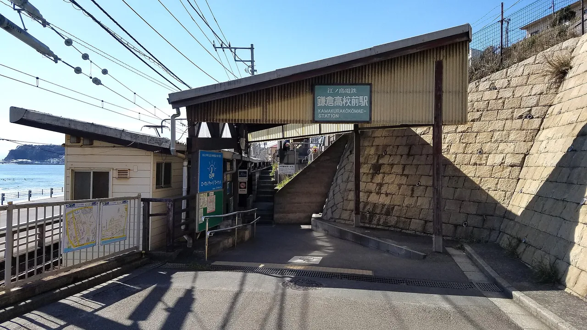

The Slam Dunk crossing: visiting Kamakurakōkōmae
A green-and-cream train rolls past a small railroad crossing, the sea flashes blue behind it, and a basketball player in a red uniform waits for the gate to lift. If you've seen the opening of Slam Dunk, you know this exact frame — and it's real. The Kamakura Kōkō-mae No. 1 crossing, beside Kamakurakōkōmae Station on the little Enoden line near Kamakura, has become one of the most visited anime pilgrimage spots on earth, drawing fans from across Asia and beyond. This guide covers how to get there, when to go so the crowd doesn't ruin it, the etiquette that keeps the neighbourhood welcoming, and what else to chain into the day.

Why this crossing is famous
Takehiko Inoue's basketball manga Slam Dunk (1990–96) and its anime set their fictional Shōhoku High in the Shōnan coastal area, and the anime's opening features a seaside railroad crossing modelled on the real No. 1 crossing at Kamakurakōkōmae — the station whose name literally means "in front of Kamakura High School." The ingredients of the shot are all genuinely there: the Enoden (Enoshima Electric Railway) trundling past several times an hour, the downhill view over Shichirigahama beach, and Enoshima island floating in the bay.
The spot simmered for decades as a fan destination, then boiled over after the 2022 film The First Slam Dunk became a phenomenon across East Asia — on busy days the little slope fills with visitors recreating the opening. It's a textbook case of seichi junrei (anime pilgrimage): a completely ordinary piece of infrastructure made luminous by a story.
Getting there
| From | Route | Time |
|---|---|---|
| Tokyo | JR Yokosuka line to Kamakura, then Enoden toward Fujisawa to Kamakurakōkōmae鎌倉高校前 | ~1 hr to Kamakura + ~20 min Enoden |
| Shinjuku | Odakyū line to Fujisawa, then Enoden toward Kamakura | ~55 min + ~15 min Enoden |
| Enoshima | Enoden two stops from Enoshima Station | ~5 min |
The crossing is directly beside the station — leave the platform, and you're there. The Enoden itself is half the experience: a one-carriage-width electric railway threading between houses and along the sea since 1902. If you plan to hop on and off (and you should), the Noriorikun one-day Enoden pass pays for itself in three to four rides.
When to go — and the crowd problem
Be honest with yourself about what you'll find midday: on weekends, holidays and clear afternoons, dozens to hundreds of fans line the slope. The photo everyone wants — train, sea, Enoshima, gate arm down — is still achievable, but you'll queue for a clean angle.
- Early morning (before ~9am) is the quiet window, with soft light on the sea. Trains run from early, so the full shot is available.
- Weekday mornings beat weekends by a wide margin.
- Sunset is the most beautiful and the most crowded — the sun drops behind Enoshima and the crowd swells for it. Go on a weekday if sunset is the goal.
- A train crosses the spot roughly every seven minutes (each direction runs about every 14 minutes), so missing one shot costs you little. Relax and wait for the next.
- School commute times matter: the station serves a real high school. Avoid clogging the crossing at morning and afternoon commute peaks — it's their route to class, not a set.
Photo etiquette
The crossing sits on a live road in a residential neighbourhood, and the crowds have strained local patience enough that Kamakura responded with multilingual warning signs, 24-hour cameras, and — from 2025 — stationed security guards and a trial designated photo area in a nearby park, on top of the city's 2019 manners ordinance. In other words: the rules below aren't optional niceties, they're what keeps the spot open to fans at all.
- Never stand in the road or on the tracks. Shoot from the pavement/sidewalk areas. Cars and the train use this crossing constantly.
- Don't block the crossing when the gate opens — pedestrians, cyclists and students need through.
- Follow staff and posted signs. At peak periods, guards direct the crowd; local rules can tighten at short notice.
- Keep it quiet and take your rubbish. Houses overlook the whole slope.
- The high school is off-limits. Kamakura High School is a working school — no entering, no photographing students.
Making a day of it
The crossing takes twenty minutes; the Enoden line deserves the rest of the day:
- Enoshima (2 stops west): the island with its shrine, lighthouse and — on clear winter days — Mt. Fuji across the bay.
- Hase (4 stops east): the Great Buddha of Kamakura and Hasedera temple's hillside gardens. Collecting goshuin? Both are classic stops.
- Kamakura proper: Tsurugaoka Hachimangū shrine, Komachi-dōri's snack street, and hiking trails between temples.
- Shichirigahama beach, right below the crossing, for lunch with the same view the anime made famous.
If you're chaining fan spots across Kanagawa, Evangelion's Hakone (Tokyo-3) is the same prefecture — an easy overnight combination. Our Kanagawa guide covers the rest.
Some links above are affiliate links. We may earn a commission at no extra cost to you. We only list services we'd use ourselves.
The opening credits made this crossing famous, but the story lives in the manga. The Deluxe Edition is the current in-print English release — Vol. 1 is where Sakuragi meets Haruko.
The "Check price" link is an affiliate link (Amazon). We may earn a small commission at no extra cost to you, and it never changes what we recommend.
The Japanese you'll actually use
The crossing's fame means station staff have seen it all — but the vocabulary makes the trip smoother and the anime richer:
| Japanese | Reading | Meaning |
|---|---|---|
| スラムダンク | Suramu Danku | Slam Dunk — the series |
| 踏切 | fumikiri | railroad crossing — the word for the spot itself |
| 鎌倉高校前 | Kamakura Kōkō-mae | "in front of Kamakura High School" — the station name |
| 江ノ電 | Enoden | the Enoshima Electric Railway |
| 湘南 | Shōnan | this stretch of coast — the series' setting |
| 海 | umi | the sea — the shot's other star |
| 電車が来ます | densha ga kimasu | "a train is coming" — the announcement you'll hear |
| 聖地巡礼 | seichi junrei | "pilgrimage to sacred ground" — visiting a work's real places |
Want these to stick? The free JLPT battle quiz drills travel and culture vocabulary like this with spaced repetition.
The crossing chains naturally with Japan's other fan destinations: anime pilgrimage by prefecture →, Evangelion's Hakone → (same prefecture), character manholes →, and station stamps → — the Enoden's little stations are stamp territory.
Common questions
Q. Where is the Slam Dunk crossing?
A. Directly beside Kamakurakōkōmae Station on the Enoden line, between Kamakura and Fujisawa in Kanagawa Prefecture. Its formal name is the Kamakura Kōkō-mae No. 1 crossing.
Q. How do I get there from Tokyo?
A. Take the JR Yokosuka line to Kamakura (about an hour), then the Enoden toward Fujisawa for roughly 20 minutes to Kamakurakōkōmae. From Shinjuku, the Odakyū line to Fujisawa then the Enoden also works.
Q. When is the best time to visit?
A. Early on a weekday morning for the fewest people; sunset for the most beautiful light (and the biggest crowd). A train crosses roughly every seven minutes counting both directions, so you never wait long for the shot.
Q. Is it crowded?
A. Yes — since the 2022 film it's one of Japan's busiest anime pilgrimage spots, especially with visitors from across East Asia. Weekend middays are the peak; go early or on weekdays.
Q. Can I stand on the crossing for a photo?
A. No. It's a live road and railway — shoot from the roadside, don't linger when the gate opens, and follow staff directions during busy periods.
Q. Is the high school from Slam Dunk real?
A. Kamakura High School is real and sits above the station, but Shōhoku is fictional — the school appears as scenery, not a filming set. It's a working school: no entry, no photographing students.
Q. What else is nearby?
A. Enoshima island (two stops), the Great Buddha at Hase (four stops), Kamakura's shrines and temple trails, and Shichirigahama beach right below the crossing.